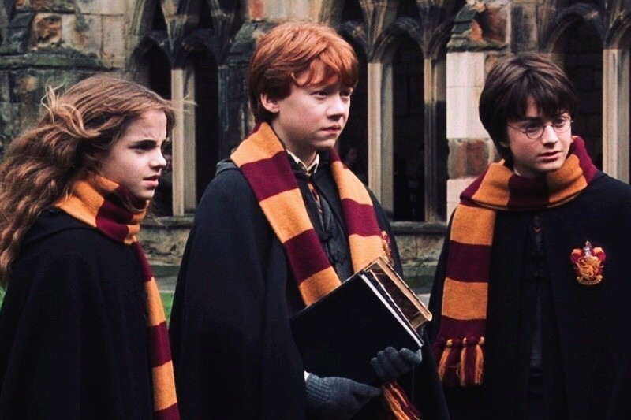

Forti Animo Estote!
1. History
2. Traits
3. Rivalries
4. Reputation
5. Common Room
6. Head of House
7. Known Gryffindors
8. Etymology
9. House Overview
Gryffindor was founded by Godric Gryffindor, one of the four legendary founders of Hogwarts School of Witchcraft and Wizardry. Godric valued bravery, determination, and chivalry, which are traits valued in his namesake house. Godric's sword is a significant artifact for the house and was instrumental in some crucial moments in the wizarding world.
Gryffindor was one of the four Houses of Hogwarts School of Witchcraft and Wizardry and was founded by Godric Gryffindor. Gryffindor instructed the Sorting Hat to choose students possessing characteristics he most valued, such as courage, chivalry, nerve and determination, to be sorted into his house.
The emblematic animal was a lion, and its colours were scarlet and gold and its house point hourglass was filled with rubies. Sir Nicholas de Mimsy-Porpington, also known as Nearly Headless Nick, was the House ghost.
Gryffindors are known for their bravery, nerve, and chivalry. They are also characterized by their strong sense of right and wrong and their propensity for heroics and adventure.
The Gryffindor house emphasised the traits of courage as well as daring, nerve, and chivalry,and thus its members were generally regarded as brave, though sometimes to the point of recklessness. Some Gryffindors had also been noted to be short-tempered.
Notably, Gryffindor house contributed many members to Dumbledore's Army and the Order of the Phoenix,although this may have been because the main members made it a point not to associate with other houses.
According to Phineas Nigellus Black, members of other houses, particularly Slytherin, sometimes felt that Gryffindors engaged in pointless heroics. Another Slytherin, Severus Snape, considered many Gryffindors to be self-righteous and arrogant, with no regard for rules.
Gryffindor has an intense rivalry with Slytherin House. This rivalry seems to have stemmed from the fallout between Godric Gryffindor and Salazar Slytherin.
Gryffindor has a reputation for bravery and chivalry. However, these traits sometimes lead to their members being perceived as show-offs. Despite this, many heroic witches and wizards have emerged from Gryffindor, including Harry Potter, Hermione Granger, and Albus Dumbledore.
Gryffindors and Slytherins had shared a fierce house rivalry since their founders, Godric Gryffindor and Salazar Slytherin, respectively, had a severe falling out over Slytherin's emphasis on blood purity.[1] There might also be an element of feeling wronged, as Harry and his fellow Gryffindors tended to win in a lot of circumstances which, when viewed from a neutral point of view, may be considered unfair.

The Gryffindor common room is located in one of the castle's towers. It's a cozy, round room with a fireplace and lots of comfortable armchairs and sofas. The room is known for its roaring fires and is often described as particularly welcoming and warm. The entrance to the room is hidden behind the portrait of the Fat Lady.
The entrance to the Gryffindor common room (which, in turn, lead to the Gryffindor dormitories) was located behind a large portrait of the Fat Lady in a pink silk dress. If one know the right password to tell her, she swung open to reveal a round opening in the wall. The common room contained a lot of squashy armchairs, a fireplace, and tables. The fireplace was connected to the Floo Network, but as it was extremely public except in the dead of night, Gryffindors usually used owls to communicate with their families instead.
The known heads of the house include Minerva McGonagall. Previously, the head of the house was Albus Dumbledore before he became headmaster.
The Head of House before and during Harry Potter's time was Minerva McGonagall. Minerva became the Head of House possibly when she was appointed Transfiguration professor at Hogwarts School of Witchcraft and Wizardry, taking over Albus Dumbledore's previous teaching position when he became Headmaster. Neville Longbottom was known to have become the Head of House after Minerva was made Headmistress in 1998 following the end of the Second Wizarding War.
Some notable members of Gryffindor house include the famous wizard Harry Potter, the wise and powerful Albus Dumbledore, the brave and loyal Hermione Granger and Ron Weasley, as well as other members of the Weasley family.
Gryffindor could possibly be derived from griffin, which is a creature in mythology with the body of a lion and the head of an eagle. In Old English and Old High German dor means gate or door. In French "d'or" means "of gold," one of the Gryffindor House colours, though it can also come from the Greek word "dora" meaning "gift".